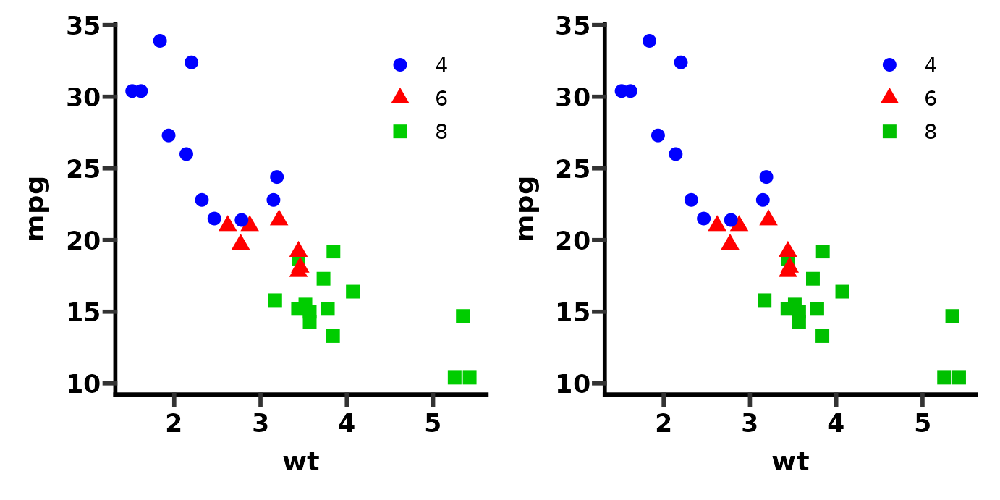
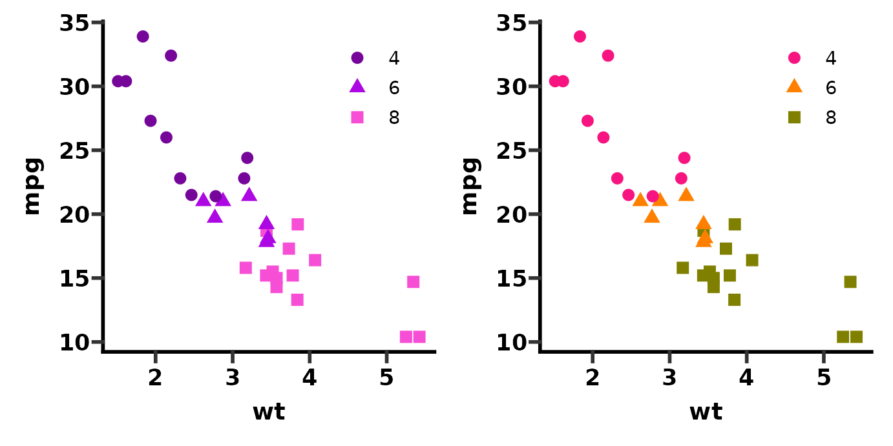
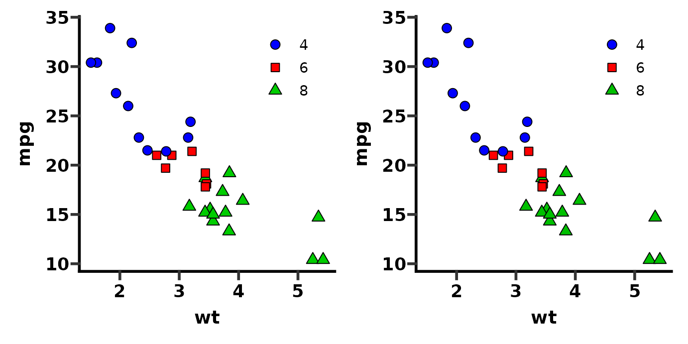
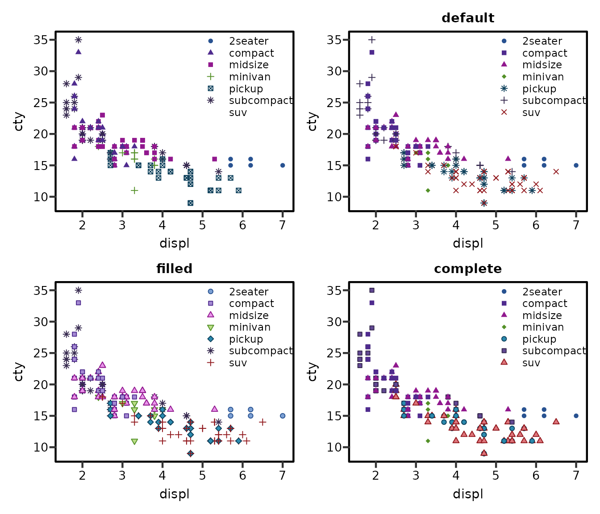

Colour, Fill, and Shape Palettes
colours.Rmdggprism includes colour and fill scales with various palettes that mirror the colour schemes available in GraphPad Prism.
Disclaimer: some of these palettes are quite nice, some are pretty ugly and not useful, and most are not colour blind friendly as far as I know (except palette = "colorblind_safe"). It would probably be safer to use other colour scales e.g. those in RColorBrewer for any serious application or work to be published.
In any case, these scales are used to colour the data elements of ggplots and can be used separately or together with theme_prism(). Additionally, a shape scale with 3 palettes is included which is similar to the shapes available in Prism. This vignette outlines how to use scale_colour_prism() (or scale_color_prism()), scale_fill_prism(), and scale_shape_prism().
Colour scales
First we’ll create a base plot.
# create a base plot to compare colour scales
base <- ggplot(mtcars, aes(x = wt, y = mpg)) +
geom_point(aes(colour = factor(cyl), shape = factor(cyl)), size = 3) +
theme_prism() +
theme(legend.position = c(0.8, 0.8))
basescale_colour_prism() (US spelling also works) functions pretty much identically to scale_colour_manual() from ggplot2. The default palette for scale_colour_prism() is "colors".
# compare manual colour scale with prism colour scale
p1 <- base + scale_colour_manual(values = c("blue", "red", "green3"))
p2 <- base + scale_colour_prism()
p1 + p2
There are several different colour palettes that are built into scale_colour_prism().
# see names and lengths of available scale_colour_prism() palettes
lengths(ggprism_data$colour_palettes)
#> autumn_leaves beer_and_ales black_and_white blueprint blueprint2
#> 9 9 9 9 9
#> blueprint3 candy_bright candy_soft colorblind_safe colors
#> 9 9 9 6 20
#> diazo earth_tones evergreen fir fir2
#> 9 10 9 9 9
#> fir3 flames flames2 floral floral2
#> 9 9 9 12 12
#> greenwash inferno magma mustard_field mustard_field2
#> 10 6 6 9 9
#> muted_rainbow neon ocean ocean2 ocean3
#> 10 9 9 9 9
#> office pastels pearl pearl2 plasma
#> 9 9 6 6 6
#> prism_dark prism_dark2 prism_light prism_light2 purple_passion
#> 10 10 10 10 9
#> quiet quiet2 shades_of_gray spring spring2
#> 9 9 9 9 9
#> stained_glass stained_glass2 starry starry2 summer
#> 9 9 5 5 10
#> sunny_garden sunny_garden2 sunny_garden3 the_blues viridis
#> 9 9 9 9 6
#> warm_and_sunny warm_pastels warm_pastels2 waves waves2
#> 9 9 9 5 5
#> winter_bright winter_soft wool_muffler wool_muffler2 wool_muffler3
#> 9 9 9 9 9Using the palettes is simple.
# try out some different colour palettes
p1 <- base + scale_colour_prism(palette = "purple_passion")
p2 <- base + scale_colour_prism(palette = "candy_bright")
p1 + p2
You can preview a single palette using the preview_theme() function. It shows a sample plot with the colour scale applied (as well as scale_fill_prism() and theme_prism()). See this page for images of most available colour palettes.
preview_theme("flames")
Fill scales
First we’ll create a base plot.
# create a base plot to compare fill scales
base <- ggplot(mtcars, aes(x = wt, y = mpg)) +
geom_point(aes(fill = factor(cyl), shape = factor(cyl)), size = 3) +
theme_prism() +
theme(legend.position = c(0.8, 0.8)) +
scale_shape_prism(palette = "filled")
basescale_fill_prism() functions pretty much identically to scale_fill_manual() from ggplot2. The default palette for scale_fill_prism() is "colors".
# compare manual fill scale with prism fill scale
p1 <- base + scale_fill_manual(values = c("blue", "red", "green3"))
p2 <- base + scale_fill_prism()
p1 + p2
There are several different fill palettes that are built into scale_fill_prism().
# see names and lengths of available scale_fill_prism() palettes
lengths(ggprism_data$fill_palettes)
#> autumn_leaves beer_and_ales black_and_white blueprint candy_bright
#> 9 9 9 9 9
#> candy_soft colorblind_safe colors diazo earth_tones
#> 9 6 20 9 10
#> evergreen fir flames floral greenwash
#> 9 9 9 12 10
#> inferno magma mustard_field muted_rainbow neon
#> 6 6 9 10 9
#> ocean office pastels pearl plasma
#> 9 9 9 6 6
#> prism_dark prism_light purple_passion quiet shades_of_gray
#> 10 10 9 9 9
#> spring stained_glass starry summer sunny_garden
#> 9 9 5 10 9
#> the_blues viridis warm_and_sunny warm_and_sunny2 warm_pastels
#> 9 6 9 9 9
#> waves winter_bright winter_bright2 winter_soft wool_muffler
#> 5 9 9 9 9Using the palettes is simple.
# try out some different fill palettes
p1 <- base + scale_fill_prism(palette = "colorblind_safe")
p2 <- base + scale_fill_prism(palette = "neon")
p1 + p2You can preview a single palette using the preview_theme() function. It shows a sample plot with the colour scale applied (as well as scale_colour_prism() and theme_prism()). See this page for images of most available fill palettes.
preview_theme("diazo")Shape scales
The order of shapes used in GraphPad Prism is slightly different to ggplot2, hence 3 different shape palettes are included in the ggprism function scale_shape_prism().
We can see the names and lengths of these shape palettes. Naturally, "default" is the default palette and does not include any shape with a fill. The "filled" palette should be used when you also want to use a fill scale, as the first 5 symbols have a fill. The "complete" palette symbols 5-9 have a fill.
# see names and lengths of available scale_shape_prism() palettes
lapply(ggprism_data$shape_palettes, nrow)
#> $complete
#> [1] 14
#>
#> $default
#> [1] 9
#>
#> $filled
#> [1] 10We can also define a function to see all the shapes in a specific palette.
# define a function for convenience
show_shapes <- function(palette) {
df_shapes <- ggprism_data$shape_palettes[[palette]][, -1]
df_shapes$pch_f <- factor(df_shapes$pch, levels = df_shapes$pch)
ggplot(df_shapes, aes(x = 0, y = 0, shape = pch)) +
geom_point(aes(shape = pch), size = 5, fill = 'red') +
scale_shape_identity() +
facet_wrap(~ pch_f) +
theme_void()
}
# show the shapes in the palette "complete"
show_shapes("complete")We’ll define a base plot to see scale_shape_prism() in action.
# create a base plot to compare shape scales
base <- ggplot(mpg, aes(x = displ, y = cty)) +
geom_point(aes(colour = class, fill = class, shape = class)) +
theme_prism(base_size = 11, base_fontface = "plain", border = TRUE) +
theme(legend.position = c(0.8, 0.75),
plot.subtitle = element_text(face = "bold"),
legend.key.height = unit(10, "pt")) +
coord_cartesian(clip = "off") +
scale_colour_prism(palette = "floral") +
scale_fill_prism(palette = "floral")
base
#> Warning: The shape palette can deal with a maximum of 6 discrete values because
#> more than 6 becomes difficult to discriminate; you have 7. Consider
#> specifying shapes manually if you must have them.
#> Warning: Removed 62 rows containing missing values (geom_point).Then we’ll compare the 3 shape palettes to the ggplot2 base plot.
# compare shape scales
p1 <- base
p2 <- base + scale_shape_prism(palette = "default") +
labs(subtitle = "default")
p3 <- base + scale_shape_prism(palette = "filled") +
labs(subtitle = "filled")
p4 <- base + scale_shape_prism(palette = "complete") +
labs(subtitle = "complete")
(p1 + p2) / (p3 + p4)
#> Warning: The shape palette can deal with a maximum of 6 discrete values because
#> more than 6 becomes difficult to discriminate; you have 7. Consider
#> specifying shapes manually if you must have them.
#> Warning: Removed 62 rows containing missing values (geom_point).